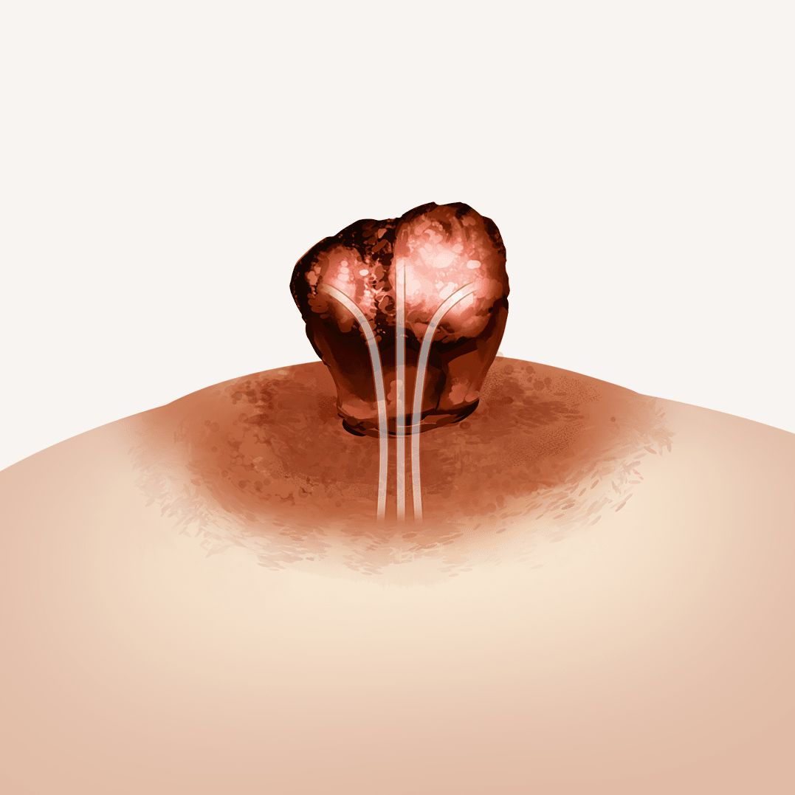
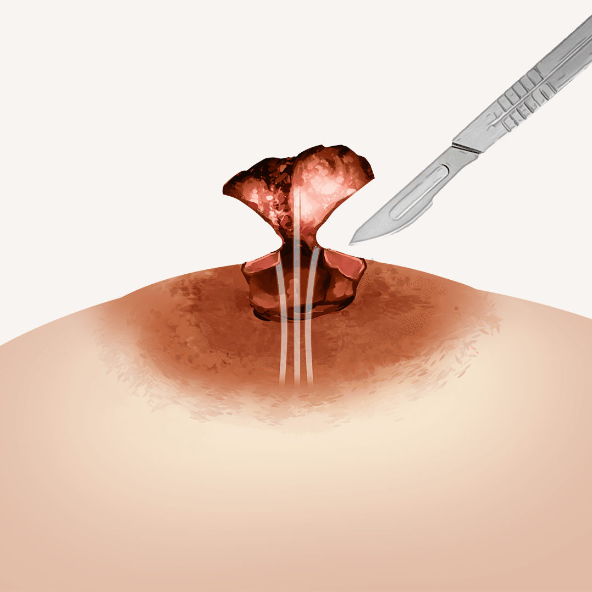
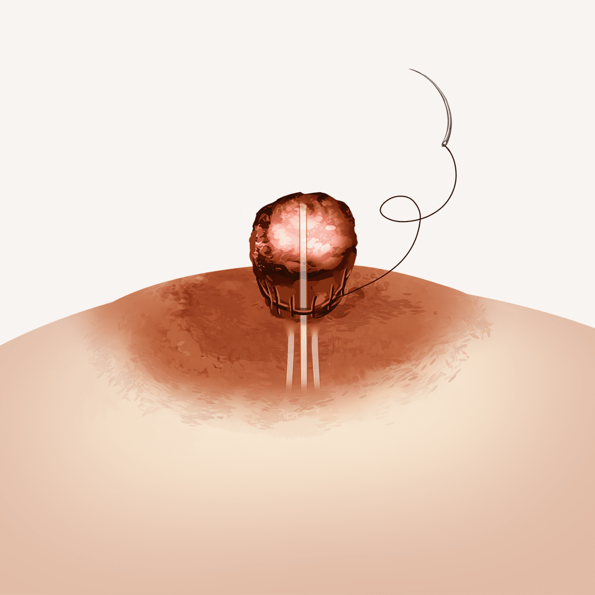
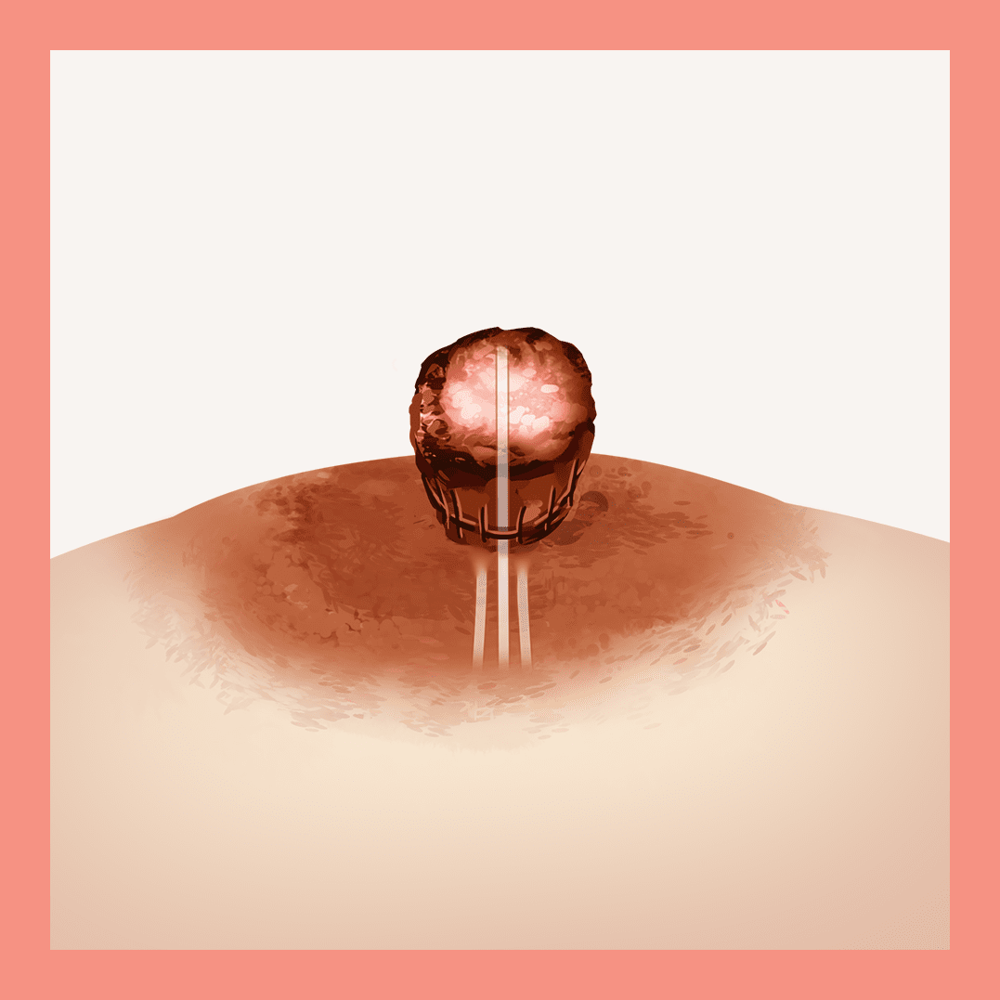
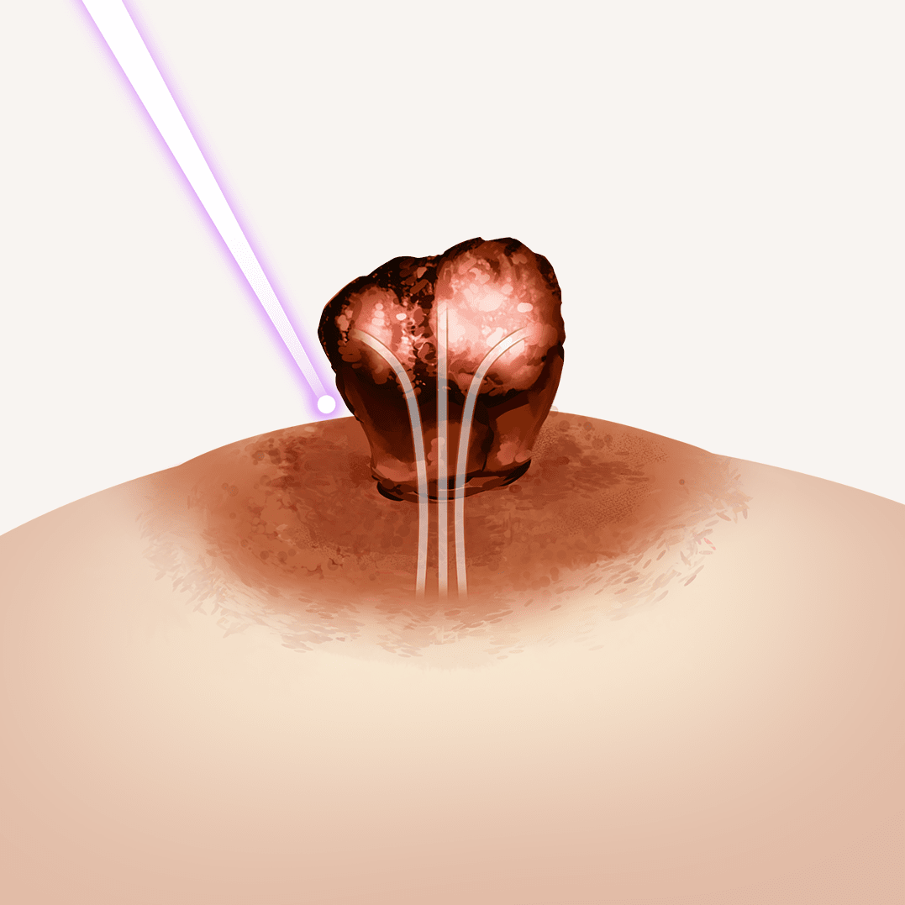
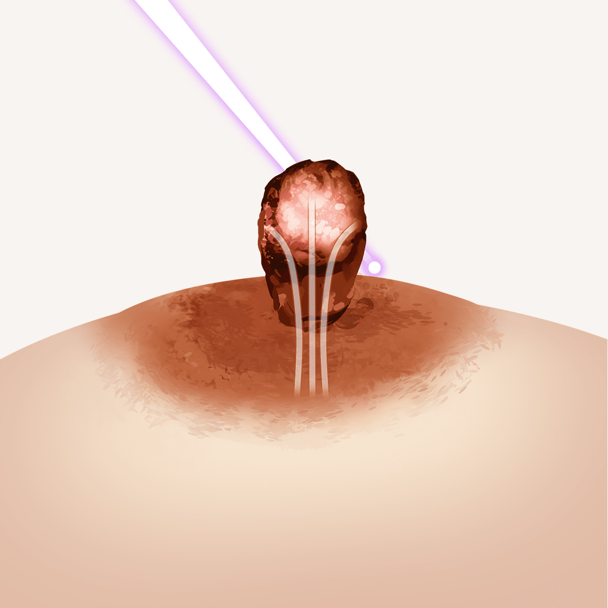
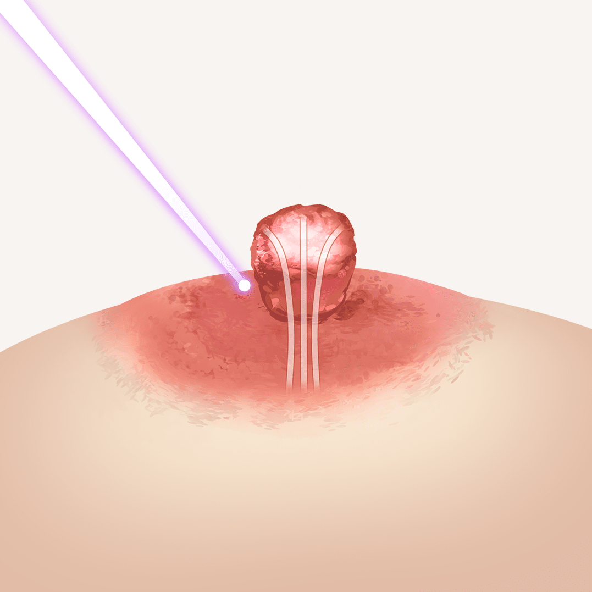
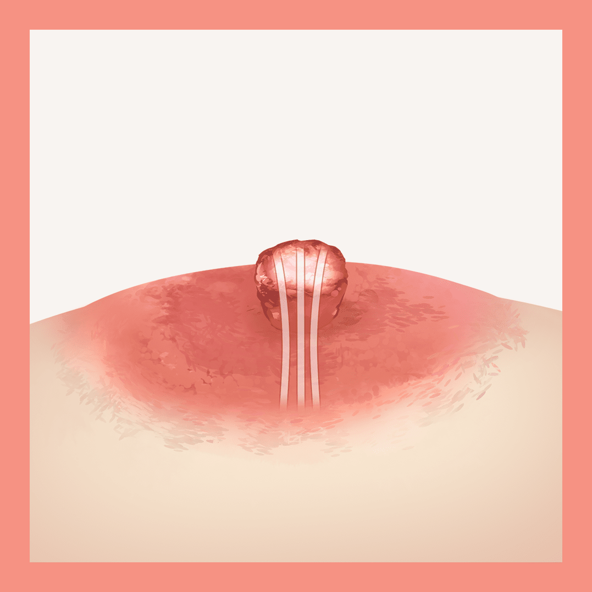

나를 위한 유두 축소 레이저
나를위한 산부인과의
“유두 축소 레이저”
는 선천적, 후천적으로
비대해진 유두를 레이저로 축소해 심미적인 개선 효과를 줍니다
- 수술시간 30분
- 회복기간 2주
- 입원여부 없음
- 마취방법 수면마취
나를 위한 유두 축소 레이저

일반적인 유두의 크기는
높이 8mm 전후,
직경 10mm 정도가 이상적입니다.
유두가 비대한 경우라면
유두 축소를 고려해 볼 수 있습니다.
유두 비대는 선천적인 경우도 있지만 출산 후 수유나
반복적인 자극, 외상 등의 후천적인 요소들이 원인이 되는
경우도 많기에 환자분들이 급격히 자신감을 잃거나
스트레스를 호소하는 경우도 많습니다.
유두 축소 레이저는 이러한 콤플렉스를 극복해 주고
자신감을 회복해 줄 수 있습니다.
나를위한 유두 축소 레이저 시술방법

유관을 보존해 유두의 기능을 유지합니다.
일반 VS 나를위한
유두 축소 시술의 차이
-

-

-

-

-

-

-

-

- 일반 유두 축소술
- 봉합 흉터 생김
- 긴 시술 시간과 회복
-
유선 손상으로 유두의 기능
유지가 어려움
-
나를위한
유두 축소 레이저 - 흉터 없이 자연스러움
- 빠른 시술 시간과 회복
-
유선과 유관을 건드리지 않는
감각을 보존한 안전한 시술
유두 축소 레이저의 효과
-
유두의
비대칭 교정 -
심미적인 개선으로
자신감 상승 -
유관과 감각
보존하여
유두의 기능 유지
나를위한 하이브리드 레이저

CO2 FRACTIONAL 레이저가 360도 회전하면
질 점막을 자극해 콜라겐을
포함한 여러 가지
물질들이 재합성 하도록 유도하는 원리입니다.
민감한 부위 절개 후 전체에
레이저를 조사하여 미백 및 재생을 도와줍니다.
마취가 필요 없을 정도로
통증이 거의 없는 간단한 레이저 시술입니다.
-
공식기관의 인증을 받은
뛰어난 안정성
유럽 CE마크 획득,
KRDA로부터 한국 최초로
허가 받은 레이저입니다 -
빠른 회복
빠른 일상생활 복귀
10분에서 15분 정도면
시술을 마치고
일상생활이 가능합니다
유두 축소 레이저 대상자
-
유두가 전체적으로
비대하게 발달한 경우 -
선천적으로 유두가
크거나 긴 경우 -
출산과 모유 수유 후
유두 모양이 변한 경우 -
유두의 비대칭이 심한 경우
유두 축소 레이저는 왜
나를위한 산부인과?


-
가슴의
모양과 크기 -
유두의
폭과 길이 -
기울어진
정도 - 유관 보존
유두 축소술은 환자에 따라
다른 유두의 형태를 개선해야 하기에
가슴의 모양과 크기, 유두의 폭, 길이, 기울어진 정도,
유관 보존 등을
다각도로 고려하여 개인의 상태에 맞춰
맞춤 레이저 시술을 진행해야 하기에
풍부한 경험의 산부인과 전문의에게 받는 것이 좋습니다.

프라이빗한 휴식 과 회복
나를위한산부인과에서는 치료를 받는
환자분들이
긴장을 완화하고 편안한
마음으로 쉬실 수 있도록
고급스럽고
편안한 분위기의 1인 회복실을 제공합니다.
유두 축소
시술 후 주의사항
시술 후 주의 사항은 개인 차가 있을 수 있습니다.
-
01
시술 후 부착해 드린 드레싱은 시술 당일은 제거하시면 안됩니다.
따라서 샤워는 시술 다음 날부터 가능하며 당일에는 피해주세요. -
02
시술 다음 날부터 하루에 1번 메디폼 제거후 아래 내용대로 처치해 주세요.
-
샤워
건조
-
소독 면봉을
이용해 소독 건조
연고 도포
-
메디폼 및
반창고 부착
-
03
메디폼을 이용한 관리는 4주간 계속 해주세요.
-
04
시술 다음날 내원하시어 소독 및 회복 레이저를 받으신 후 1주차, 4주차에
경과를 확인합니다. -
05
유두함몰 시술을 병행한 경우. 봉합사가 유두와 유륜 경계면에 있게 됩니다.
봉합사는 수술 4주 차 경과 시에시술의의 판단에 따라 제거합니다.
켈로이드성 피부인 경우에는 시술 후에도 흉터 관리를 위해 추가적인 경과
관찰과 관리가 필요할 수 있습니다.